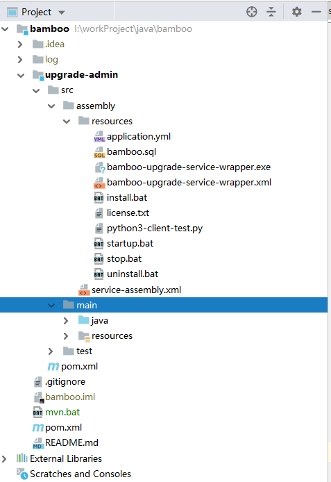
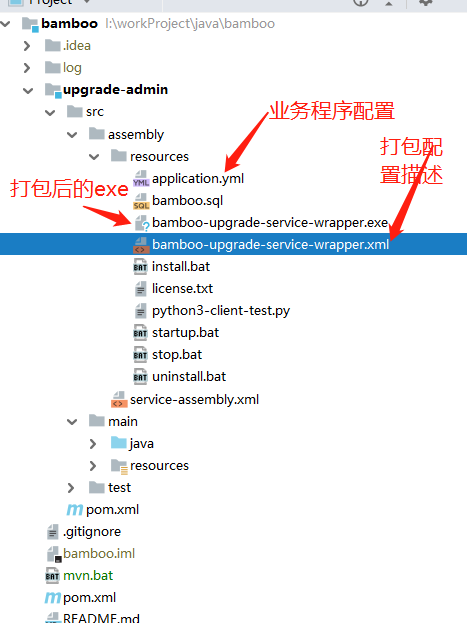
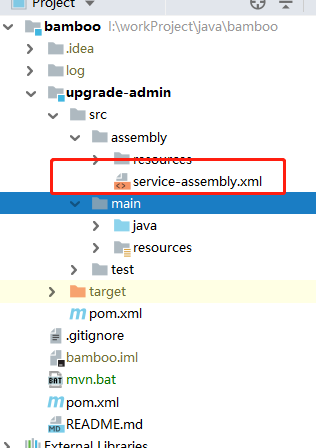
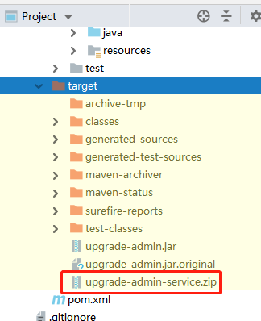
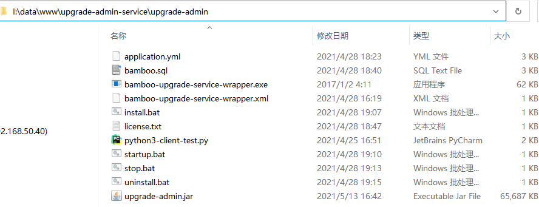
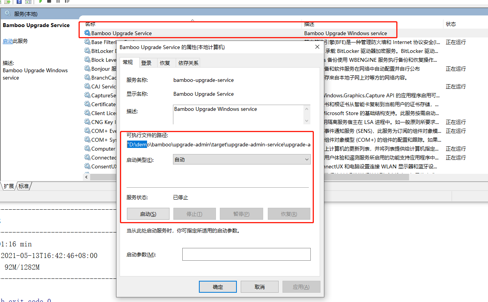

How to Run Spring Boot Program on Windows Server
spring boot程序如何正确运行在Windows服务器上面⌗
一次项目开发中，要求服务器是windows环境，一般我们都是用java sprint boot 开发的程序运行在linux 环境中，通过supervisor程序来守护，设置开机启动之类的操作命令， 很少有人用windows server, 这次机会遇到这个问题需要解决，好在记的我在几年前用过java service wapper（简称jsw）这个程序 ，对jsw 有一些了解,于是找一相当资料看一下
官网资料介绍在这里：https://wrapper.tanukisoftware.com/doc/english/launch-win.html
我在这里简单介绍一下jsw，通过官网介绍，我了解到。
他可以替代supervisor 做程序守护，开机启动等相关设置，如果是需要把jar包跑在windows 服务器当中。我需要通过sc 命令来注册服务指令
目前我暂时用到服务守护，和服务注册，等特点，其他特性还没有研究。以下是记录一下我在spring boot 项目中如何使用它来打包成 jsw 服务。
首先看一下我的项目结构图

- 需要在pom.xml 加入maven 打外插件， 插件名为：maven-assembly-plugin
<build>
<finalName>upgrade-admin</finalName>
<plugins>
<plugin>
<groupId>org.springframework.boot</groupId>
<artifactId>spring-boot-maven-plugin</artifactId>
<configuration>
<executable>true</executable>
</configuration>
</plugin>
<!--主要是以下插件配置-->
<plugin>
<groupId>org.apache.maven.plugins</groupId>
<artifactId>maven-assembly-plugin</artifactId>
<version>3.0.0</version>
<configuration>
<descriptors>
<!--通过service-assembly.xml 描述该项目打包的配置信息-->
<descriptor>${project.basedir}/src/assembly/service-assembly.xml</descriptor>
</descriptors>
</configuration>
<executions>
<execution>
<id>service-assembly</id>
<phase>package</phase>
<goals>
<goal>single</goal>
</goals>
</execution>
</executions>
</plugin>
</plugins>
</build>
-
配置服务jsw 打包描述信息
以下是打包配置文件信息：
<service>
<id>bamboo-upgrade-service</id>
<name>Bamboo Upgrade Service</name>
<description>Bamboo Upgrade Windows service</description>
<executable>java</executable>
<arguments>-jar upgrade-admin.jar</arguments>
</service>
id: windows 服务id,要是唯一的，在windows 服务注册表里是唯一的
name: 服务名称
description： 服务描述
executable ： 执行bin 名称
arguments： 执行参数

service-assembly.xml 文件 这是打包核心配置核心文件
主是用于告诉maven 需要打包的文件在哪 里，如何打包，打成什么格式的包
<assembly xmlns="http://maven.apache.org/ASSEMBLY/2.0.0" xmlns:xsi="http://www.w3.org/2001/XMLSchema-instance"
xsi:schemaLocation="http://maven.apache.org/ASSEMBLY/2.0.0 http://maven.apache.org/xsd/assembly-2.0.0.xsd">
<id>service</id>
<formats>
<format>zip</format>
</formats>
<fileSets>
<!-- Copy in the application JAR -->
<fileSet>
<directory>${project.build.directory}</directory>
<outputDirectory>/</outputDirectory>
<includes>
<include>${project.build.finalName}.jar</include>
</includes>
</fileSet>
<!-- Copy in the resources including the wrapper exe and config -->
<fileSet>
<directory>${project.basedir}/src/assembly/resources</directory>
<outputDirectory>/</outputDirectory>
</fileSet>
</fileSets>
</assembly>
该文件的目录位置如下

-
执行打包 mvn package 命令 
-
部署程序，降upgrade-admin-service.zip包 复制到一个正式的目录下解压后下图就是解压后zip后的效果 
-
先安装windows 服务指令，上图install.bat是我之前写好的，该文件就是用来install Windows 服务脚本 install.bat
@echo off bamboo-upgrade-service-wrapper install echo 安装bamboo服务完成 pause -
编写启动服务，新建startup.bat文件
@echo off for /f "skip=3 tokens=4" %%i in ('sc query bamboo-upgrade-service') do set "zt=%%i" &goto :next :next if /i "%zt%"=="RUNNING" ( echo 已经发现该服务在运行 ) else ( net start bamboo-upgrade-service echo 该服务现己启动，请等20秒中.... ) pause -
停止服务 ，新建stop.bat文件
```powershell
@echo off
for /f "skip=3 tokens=4" %%i in ('sc query bamboo-upgrade-service') do set "zt=%%i" &goto :next
:next
if /i "%zt%"=="RUNNING" (
net stop bamboo-upgrade-service
echo 该服务现己关闭，请等20秒中....
) else (
)
pause
```
-
卸载服务, 新建uninstall.bat 文件
@echo off bamboo-upgrade-service-wrapper uninstall echo 卸载bamboo服务完成 pause -
查看windows运行效果
按win+R 快捷键，输入services.msc 命令，回车，
设置开机启动该服务都可以在windows 这边设置
